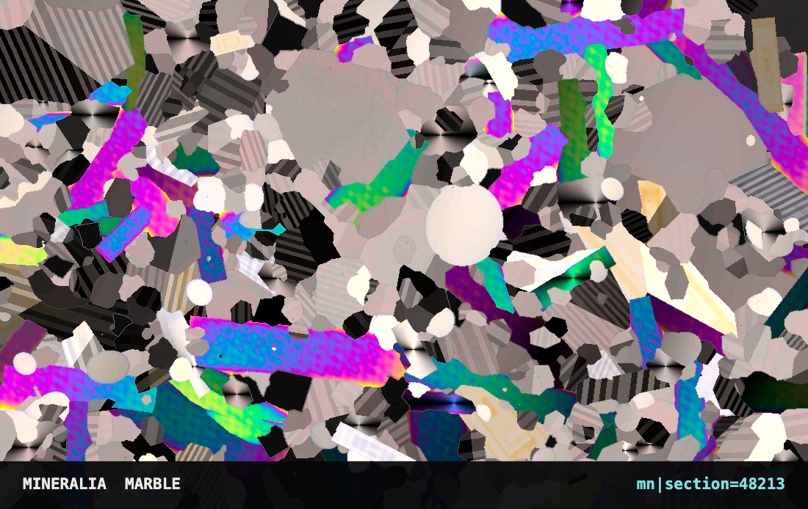
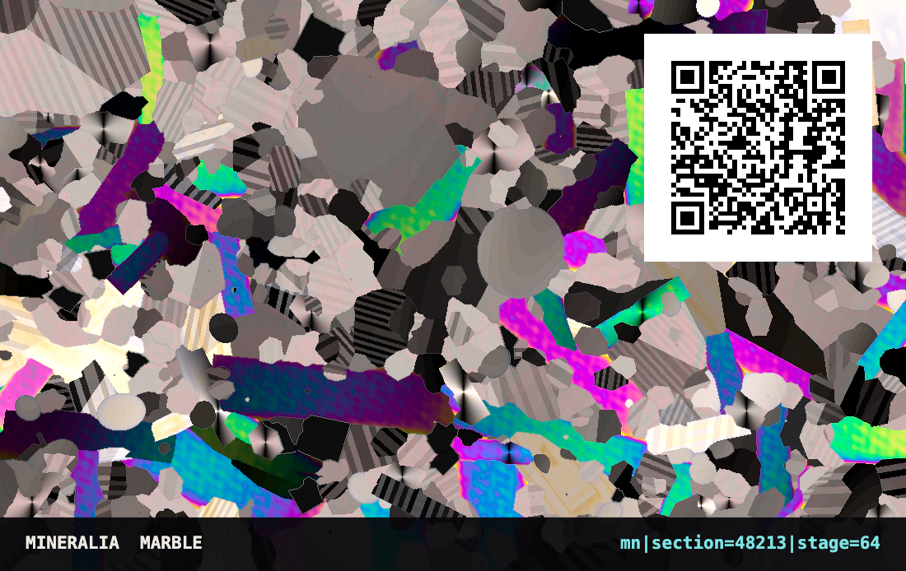

Vibe Cards · Card 016 · Parametric deck
A card that is one number. Grind a rock thin enough to see through, light it between two crossed filters, and the crystals come up in colours the rock does not have. This card is one such slice, and the number brings it back.


Nothing moved between the two pictures except the microscope stage. Every grain sits in exactly the same place on both faces. Turn the stage and each crystal goes black four times in a full turn, then lights again, so a grain that is bright on the front is dark on the back and the one beside it has swapped the other way.
That line is the whole card. One number names the slice. What kind of rock it is, where every crystal sits, which way each one faces and how thick the glass is are all read out of it.
mn|section=48213
Type that number at persona500.com/mineralia and the same slice is cut again. Or open the link below, which already carries it.
Cut it again It is on the deck, and runs at home Build your own card
section | The slice number. It picks the rock, seeds every crystal, and sets which way each one faces. Same number, same slice, every time. |
|---|---|
stage | Optional. How far the microscope stage is turned, out of 256. Leave it off and the slice opens where the number puts it. |
light | Optional. xpl crossed filters, ppl one filter, tint a known plate slid in, cono looking straight down one crystal. |
Light of every wavelength goes through a crystal, comes out shifted by an amount that depends on the crystal and how thick it is, and the second filter keeps only part of what returns. What survives is a colour. The engine does that sum across the visible spectrum and looks up the answer.
The result is a published curve, not a palette. It was checked against an independent working of it and agreed everywhere to about one part in twenty five. Grey and white grains are quartz and feldspar. The blazing blues, greens and pinks are olivine, mica and calcite. Solid black squares are metal ores, which pass no light at all.
Bifurcata (card 011) grows trees. Leviathan (card 010) grinds pigment. Pangea (card 012) paints a landscape with both. Mineralia is the one that stopped picking colours and asked the physics instead.
| Card size | 85.6 × 53.98 mm — a normal bank-card blank |
|---|---|
| Artwork | Exported from the engine at the printed address; the engine is the source |
| QR code | 20 mm on the back. It opens this page. |
| Licence | MIT |
What would you change about this card, or the engine behind it?
No account, no email, nothing to sign up for.